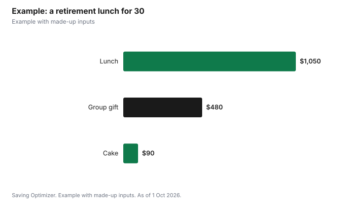

Events · Canada
Retirement Party Costs: Who Pays, Gifts and Tax Rules for Employers

A retirement party is paid for by whoever hosts it: the employer, colleagues who chip in, or the retiree's family. Employer-hosted events are common for long-serving staff; the CRA treats an employer social event as a non-taxable benefit if it is open to all employees and costs $150 or less per person including taxes. A non-cash long-service award, such as a watch or a gift card that cannot be used like cash, is tax-free up to $500 for at least five years of service. Colleague-organized parties usually split costs among organizers or ask attendees to pay for their own meal, with a group gift collected separately. Family parties follow the same cost logic as any celebration.
Key takeaways
- Decide who hosts: employer, colleagues or family.
- CRA: employer social events up to $150 per person, open to all employees, up to six a year, are not taxable.
- CRA: long-service awards up to $500, non-cash, at least five years of service and five years since the last award.
- Collecting for a gift: make contributions voluntary and private.
- Ontario permit for free drinks at an unlicensed venue: $50 a day.
- Example with made-up inputs: an office lunch for 30.
Who usually pays
| Host | Who pays | Typical format |
|---|---|---|
| Employer | The organization | Office reception, lunch or evening event |
| Colleagues | Organizers or attendees | Restaurant lunch, pub night |
| Family | Spouse or adult children | Home party, hall, dinner |
| Retiree | The retiree | Open house or party for friends |
If an employer is not hosting, ask the manager whether the organization will contribute, cover a cake or let the event take place on site during work hours. Many workplaces have an informal policy; asking costs nothing.
Tax rules when the employer pays
The CRA says an employer-provided social event, such as a party, is not a taxable benefit to employees if it is available to all employees at a particular location and the cost is $150 or less per person, including taxes, with spouses or common-law partners counted as persons. If the cost per person is over the limit, the CRA says the full amount is taxable, not just the excess. The policy covers up to six employer-paid events a year.
For a gift, the CRA has two separate policies. Non-cash gifts for special occasions such as religious holidays, birthdays, weddings or the birth of a child are tax-free up to a total of $500 a year. Non-cash long-service or anniversary awards have their own $500 limit, require at least five years of service, and can be given once every five years. The CRA's special-occasion list does not name retirement, so employers should confirm how a retirement gift is treated; a long-service award often fits a long career. The CRA says cash and near-cash gifts, such as a gift certificate that can be converted to cash, are taxable; gift cards count as non-cash only if they meet the CRA's conditions.
| Item | Limit | Conditions |
|---|---|---|
| Social event | $150 per person incl. tax | Open to all employees at a location; up to six a year |
| Special-occasion gifts | $500 a year total | Non-cash; occasions such as religious holidays, birthdays, weddings, births |
| Long-service award | $500 | Non-cash; 5+ years of service; 5 years since last award |
| Cash or near-cash | No exemption | Always a taxable benefit |
Colleague-organized parties
- Pick a format most people can afford, such as lunch rather than a formal dinner.
- Ask attendees to pay for their own meal and collect separately for the gift.
- Keep contributions voluntary and private; an envelope or anonymous e-transfer avoids pressure.
- Ask the retiree what they would enjoy, or ask a family member.
- Have one person handle money and share a short summary of how it was spent.
Venue and alcohol
An office reception avoids venue costs; check workplace rules on alcohol. A restaurant private room uses the restaurant's liquor licence. At a rented hall without a licence in Ontario, a private event permit is $50 a day for free drinks or $150 a day for a cash bar, and the event must be invitation-only. A Toronto community centre's 2026 rate for a community room is $70 an hour without alcohol and $104 with alcohol, before HST.
Speeches and program
Keep the program short: a welcome, two or three speeches from a manager, a long-time colleague and the retiree, and a gift presentation. A slideshow of career photos and a card or book of messages from colleagues and clients are inexpensive and personal. If former colleagues have moved on, invite them; it is often the part the retiree remembers.
Timing
Hold the workplace event before the retiree's last day, ideally in the final week or two, so colleagues are still around and the retiree is not coming back after leaving. A lunch or late-afternoon reception keeps it within or close to work hours and makes it easier for people with family commitments to attend. If the retiree is leaving in summer or near the holidays, check vacation calendars before picking a date, and give at least two to three weeks' notice so people can plan and contribute.
Gift ideas
- A book of messages from colleagues, past and present.
- An experience tied to retirement plans, such as a golf day, a class or travel gear.
- A framed photo or a piece of art for the home.
- A donation to the retiree's chosen charity.
Family retirement parties
A family celebration is separate from the workplace event and follows the same choices as any family party: home, hall or restaurant. It can be a good moment to mark the new chapter with grandchildren and friends outside work. Combining it with a milestone birthday or anniversary saves on a second event.
Example with made-up inputs
These numbers are an example with made-up inputs. Colleagues organize a restaurant lunch for 30 people. Each attendee pays their own meal of $35 including tax and tip, $1,050 in total. Separately, 24 colleagues contribute $20 each toward a gift, $480. The employer buys a $90 cake. If the employer instead hosted and paid for the whole lunch for staff at a location, $1,050 for 30 people is $35 a person, well under the CRA's $150 per-person limit, so it would not be a taxable benefit to the employees under the CRA's rules.
| Item | Who pays | Amount |
|---|---|---|
| Lunch, 30 x $35 | Attendees (or employer) | $1,050 |
| Group gift, 24 x $20 | Colleagues | $480 |
| Cake | Employer | $90 |
| Total | $1,620 |

Steps
- Ask whether the employer will host or contribute.
- Ask the retiree, or their family, what they would like.
- Pick a date, format and venue.
- Collect for a gift privately.
- Plan short speeches and a card or book.
- Send a thank-you summary to contributors.
Common mistakes
- Pressuring colleagues to contribute.
- Choosing an expensive format many cannot afford.
- Employer events above $150 a person, which can become taxable.
- Cash gifts from the employer, which are always taxable.
- Forgetting to invite former colleagues.
Related: benefits before 65 and experience gifts.
Sources
- Canada Revenue Agency, Gifts, awards, and long-service awards, canada.ca (Wayback copy), as of 1 Oct 2026.
- Canada Revenue Agency, Social events, canada.ca (Wayback copy), as of 1 Oct 2026.
- Alcohol and Gaming Commission of Ontario, Special occasion permits and private event permits, agco.ca, as of 1 Oct 2026.
- Ralph Thornton Community Centre, Rates - Updated for 2026, ralphthornton.org, as of 1 Oct 2026.
- Meal, gift and cake amounts in the example are made-up inputs.
Frequently asked questions
Who pays for a retirement party?
Whoever hosts: the employer, colleagues who chip in, or the retiree's family.
Is an employer retirement party a taxable benefit?
Not under the CRA's policy if it is open to all employees at a location and costs $150 or less per person including taxes, up to six events a year.
Is a retirement gift from an employer taxable?
Cash is always taxable. A non-cash long-service award up to $500 is tax-free if the employee has at least five years of service and none was given in the past five years.
How much should I contribute to a retirement gift?
There is no set amount. Contributions should be voluntary and private.
Do I need a permit to serve alcohol at a retirement party in Ontario?
At a rented venue without a liquor licence, yes: $50 a day for free drinks or $150 for a cash bar.
What is a good retirement gift?
A book of messages, an experience tied to their plans, or a donation to a chosen charity.
Researched and drafted with AI assistance and fact-checked against official Canadian sources. How we create content.
Disclosure: Saving Optimizer may earn a commission if a partner link is added later. No partnership is claimed on this page. Education only.